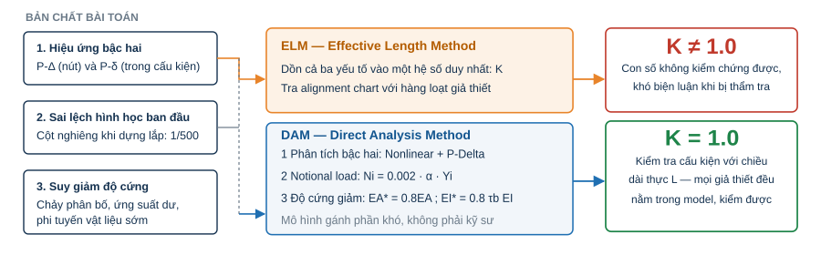
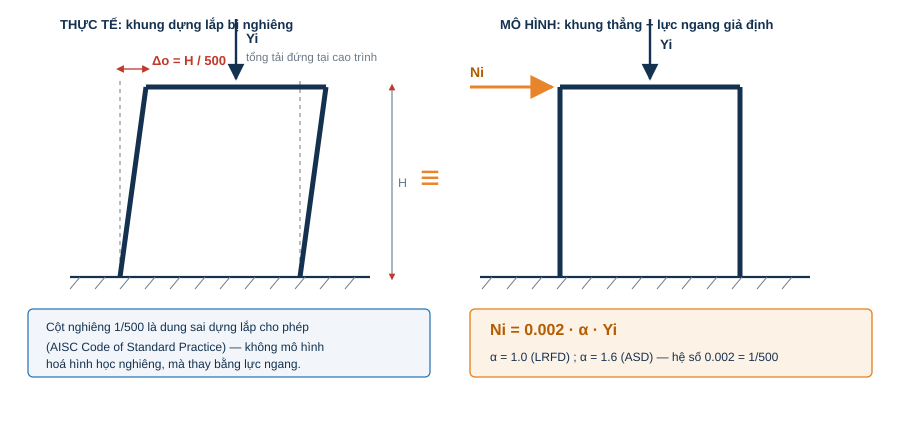
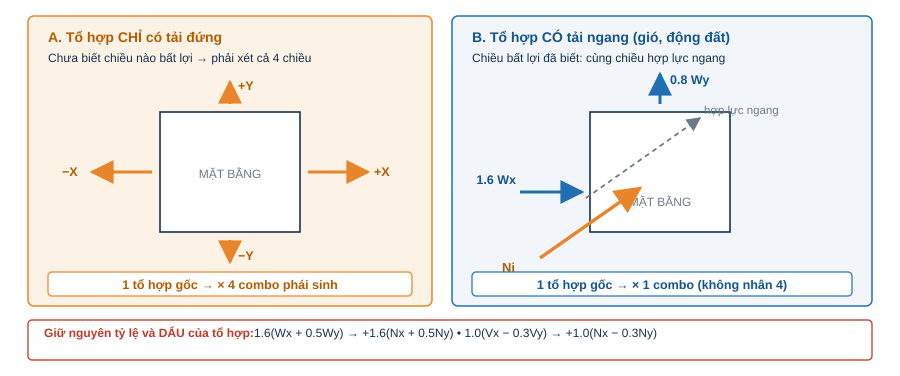
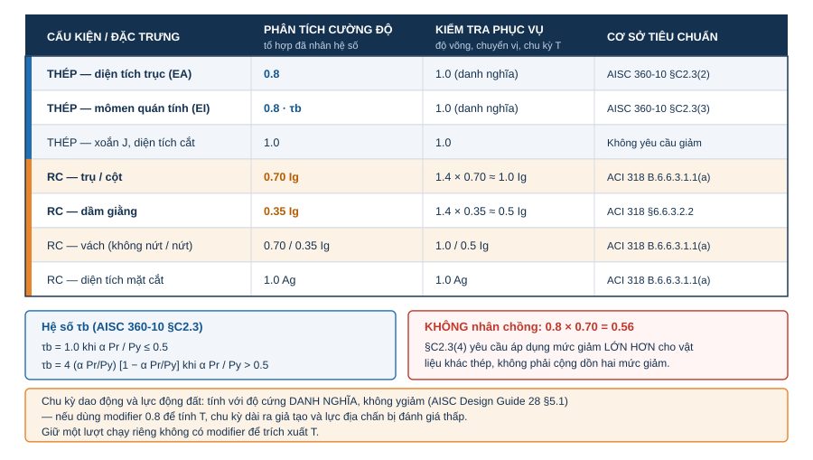
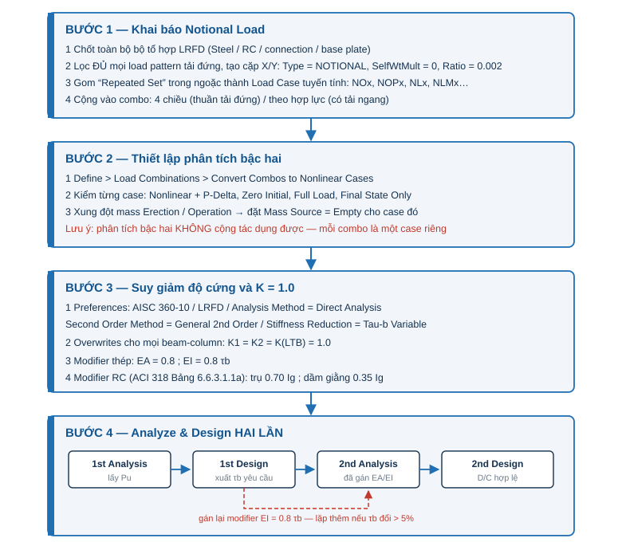
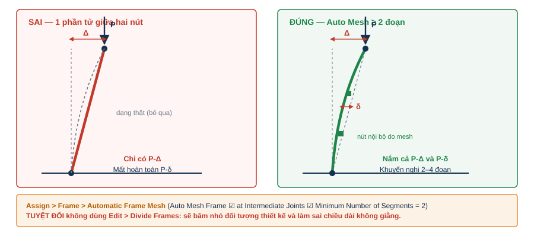

1. Tại sao phải là Direct Analysis Method (DAM)?
Sức bền của một cột thép trong hệ kết cấu thép không chỉ phụ thuộc vào tiết diện của nó, mà còn phụ thuộc vào độ mềm dẻo của toàn hệ. AISC 360 yêu cầu bài toán ổn định phải xét đồng thời ba yếu tố:
- Hiệu ứng bậc hai: P-Δ (chuyển vị của nút) và P-δ (biến dạng uốn trong lòng cấu kiện);
- Sai lệch hình học ban đầu: cột nghiêng do dựng lắp (thường lấy 1/500).
- Giảm độ cứng do chảy phân bố (partial yielding, ứng suất dư).
Phương pháp Chiều dài hiệu dụng (Effective Length Method - ELM) dồn cả ba yếu tố này vào một con số duy nhất — hệ số Effective length factor K — rồi yêu cầu kỹ sư đi tra biểu đồ alignment chart với nhiều giả thiết và các điều kiện biên. K cần thời gian để tính toán & thay đổi trong suốt quá trình thiết kế. Khung có giằng lệch tâm, cột đỡ thiết bị, Pipe rack nhiều cao trình, Cột thép đặt trên trụ RC… đòi hỏi nhiều công sức tính toán và kiểm soát kết quả.
DAM đảo ngược logic đó: mô hình gánh phần khó — bằng phân tích bậc hai, tải trọng danh nghĩa (notional load) và giảm độ cứng — cấu kiện được kiểm tra với K = 1.0, dùng chính chiều dài thật của nó. Với kết cấu thép, đây không chỉ là lựa chọn “hiện đại”, nó là lựa chọn duy nhất bảo vệ được kỹ sư khi cần giải trình về K.

Ba điều kiện bắt buộc của DAM
| Điều khoản | Yêu cầu | Công thức | Nơi khai báo trong SAP2000 |
|---|---|---|---|
| C2.1 | Phân tích bậc hai (P-Δ và P-δ) | — | Nonlinear Static + P-Delta; divide frame |
| C2.2b | Notional load ở mỗi cao trình | Ni = 0.002·α·Yi, α = 1.0 (LRFD) / 1.6 (ASD) | Load Pattern type NOTIONAL |
| C2.3 | Giảm độ cứng | EA* = 0.8EA; EI* = 0.8·τb·EI | Frame Property Modifiers |
| C3 | Kiểm tra cấu kiện với K = 1.0 | Lc = L | Steel Frame Design Overwrites |
với τb = 1.0 khi αPr/Py ≤ 0.5, và τb = 4(αPr/Py)[1 − αPr/Py] khi αPr/Py > 0.5.
2. BƯỚC 1 — Khai báo Notional Load
Notional load là lực ngang tương đương mô phỏng cột nghiêng 1/500, bằng 0.002 lần tải trọng đứng tại cao trình đang xét, và phân bố theo đúng cách tải trọng đứng phân bố (§C2.2b(3)).

2.1 Trình tự khai báo
(a) Khai báo tổ hợp LRFD đầu tiên. Notional load được yêu cầu trong các tổ hợp: mỗi tổ hợp có một tổ hợp tải đứng riêng, nên phải có danh sách combo hoàn chỉnh trước khi bắt đầu.
(b) Lọc ra toàn bộ Load Pattern là “tải trọng đứng” — không chỉ Dead Load. Trong các kết cấu công nghiệp, danh sách này dài hơn ta tưởng: Tải trọng bản thân (BL), tĩnh tải hoàn thiện (DL), tải thiết bị empty (EE), tải vận hành (EOL), tải nước thử áp (ETL), Hoạt tải sàn (LL), Monorail (LLM)… Bỏ sót một pattern nào là thiếu notional load của pattern đó.
(c) Tạo cặp Load Pattern notional cho mỗi tải đứng theo hai phương X, Y (quy ước đặt tên gọn: xDL/yDL, xEE/yEE…):
Define > Load Patterns
Load Pattern Name : xDL
Type : NOTIONAL
Self Weight Mult. : 0
Auto Lateral Load : Auto
→ Modify Lateral Load Pattern...
Base Load Pattern : DL
Load Ratio : 2.000E-03
Direction : Global X / Global Y2.2 Kỹ thuật “Repeated Set” — biến 40 pattern thành 8 load case
Nếu cộng notional pattern trực tiếp vào từng combo, ta phải nhập từng dòng hệ số cho mỗi pattern trong mỗi combo. Thay vào đó, hãy nhìn vào cấu trúc ngoặc của tổ hợp:
1.2·(D + Dsup + EE + EOL) + 1.6·(L + Lmono)
└──── nhóm lặp lại ────┘ └── nhóm lặp lại ──┘Mỗi nhóm trong ngoặc xuất hiện lại ở nhiều combo với cùng hệ số. Vậy hãy gom notional của cả nhóm thành một Load Case tuyến tính duy nhất:
| Nhóm tải đứng lặp lại | Load Case notional (X) | Nội dung Load Case |
|---|---|---|
| D + Dsup + EE | NOx | xD + xDsup + xEE |
| D + Dsup + EE + EOL | NOPx | xD + xDsup + xEE + xEOL |
| L | NLx | xL |
| L + Lmono | NLMx | xL + xLmono |
| L + 1.4·Lmono | NLM2x | xL + 1.4·xLmono |
Khai báo mỗi Load Case: Static / Linear / Zero Initial Conditions, gộp các notional pattern với Scale Factor bằng đúng tỷ lệ bên trong ngoặc. Khi đó combo chỉ cần thêm 2 dòng thay vì 20:
Combo: 1.2·(D+Dsup+EE+EOL) + 1.6·(L+Lmono) + 1.2·NOPx + 1.6·NLMx2.3 Chiều của Notional Load
§C2.2b(3): notional load phải đặt theo chiều làm tăng hiệu ứng mất ổn định của tổ hợp đang xét.

| Loại tổ hợp | Chiều notional | Số combo phát sinh |
|---|---|---|
| Chỉ có tải đứng | Cả 4 chiều: +X, −X, +Y, −Y (chưa biết chiều bất lợi) | × 4 |
| Có tải ngang (W, E) | Cùng chiều hợp lực ngang của combo đó | × 1 |
Ví dụ với combo có gió 1.6·(WX + 0.5·WY): notional cũng phải theo tỷ lệ đó → +1.6·(Nx + 0.5·Ny). Với combo động đất 1.0·(VX − 0.3·VY) → +1.0·(Nx − 0.3·Ny).
3. BƯỚC 2 — Thiết lập phân tích bậc hai
Nguyên tắc quan trọng: phân tích bậc hai KHÔNG cộng tác dụng được. Không thể chạy P-Delta cho từng pattern rồi cộng tuyến tính trong combo. Mỗi tổ hợp thiết kế phải là một Nonlinear Static case độc lập, mang toàn bộ tải đã nhân hệ số.
3.1 Chuyển combo thành Nonlinear Case
Define > Load Combinations > Convert Combos to Nonlinear Cases...
→ chọn toàn bộ combo LRFD → OK
(SAP2000 sinh ra LCxxxx-NL, và combo LCxxxx được ghi lại thành: 1.0 × LCxxxx-NL)Sau khi chuyển, mở kiểm tra 2–3 case bất kỳ:
| Trường | Giá trị đúng |
|---|---|
| Load Case Type / Analysis Type | Static / Nonlinear |
| Geometric Nonlinearity | P-Delta |
| Initial Conditions | Zero Initial Conditions |
| Loads Applied | toàn bộ pattern kèm hệ số của combo (0.9, 1.2, 1.6…) |
| Load Application | Full Load |
| Results Saved | Final State Only |
3.2 Lưu ý Mass Source (Erection vs. Operation)
Lỗi thường gặp trên model analysis:
Load Case LC1009-NL reset not to run.
Conflicting mass sources for included Load Pattern VX(E).Nguyên nhân: một case nonlinear chứa pattern động đất tĩnh tương đương gắn với Mass Source “Erection”, trong khi case lại đang dùng Mass Source “Operation” (hoặc ngược lại). Giải pháp: với các case nonlinear tĩnh, khối lượng không tham gia tính toán → đặt Mass Source = Empty cho case đó. Lực động đất đã là lực tĩnh đã tính sẵn, không cần mass.
4. BƯỚC 3 — Giảm độ cứng và K = 1.0
4.1 Design Preferences
Design > Steel Frame Design > View/Revise Preferences
Design Code : AISC 360-10
Design Provision : LRFD
Multi-Response Case Design : Envelopes
Analysis Method : Direct Analysis ← cốt lõi
Second Order Method : General 2nd Order ← cốt lõi
Stiffness Reduction Method : Tau-b Variable (hoặc Tau-b Fixed = 1.0, xem Tip 6)4.2 Overwrites: buộc K = 1.0
Design > Steel Frame Design > View/Revise Overwrites (chọn toàn bộ beam-column)
Effective Length Factor K1 Major / K1 Minor : 1.0
Effective Length Factor K2 Major / K2 Minor : 1.0
Effective Length Factor K (LTB) : 1.0KLTB = 1.0 là lựa chọn thiên về an toàn theo AISC 360-10 Commentary E4 (mặc định chương trình lấy 1.0 cho dầm, nhưng nên khai báo tường minh để hồ sơ tính minh bạch).
4.3 Property Modifiers cho cấu kiện thép
Assign > Frame > Property Modifiers cho toàn bộ cấu kiện tham gia hệ chịu lực ngang:
| Modifier | Giá trị | Ghi chú |
|---|---|---|
| Cross-section (axial) Area | 0.8 | Chủ yếu ảnh hưởng thanh giằng, thanh dàn |
| Moment of Inertia about 2 & 3 axis | 0.8 × τb | τb phụ thuộc Pu → cần lặp |
| Torsional constant, Shear area | 1.0 | AISC không yêu cầu giảm |
Lưu ý: hệ số giảm là để phân tích cường độ. Không dùng cho kiểm tra độ võng phục vụ (serviceability), không dùng cho tính chu kỳ dao động (§4.4).
4.4 Trụ RC và dầm giằng RC trong cùng model
AISC 360-10 §C2.3(4): khi cấu kiện vật liệu khác Steel tham gia vào ổn định hệ và tiêu chuẩn chi phối vật liệu đó yêu cầu mức giảm lớn hơn, thì áp dụng mức giảm lớn hơn đó. Theo ACI 318-14 Bảng 6.6.3.1.1(a) (không đổi trong 318-19/318-25):
| Cấu kiện | Cường độ (factored) | Chuyển vị ngang tức thời — §6.6.3.2.2 (1.4·I, ≤ Ig) |
|---|---|---|
| Trụ / cột RC | 0.70·Ig | 1.4 × 0.70 ≈ 1.0·Ig |
| Dầm giằng RC | 0.35·Ig | 1.4 × 0.35 ≈ 0.5·Ig |
| Vách (nứt / không nứt) | 0.35 / 0.70·Ig | tương tự |
| Diện tích | 1.0·Ag | 1.0·Ag |
Khai báo tại: Define > Section Properties > Frame Sections > Modify/Show Property > Set Modifiers

5. BƯỚC 4 — Analyze & Design hai lần
τb phụ thuộc Pu, mà Pu lại phụ thuộc độ cứng của model → bài toán vòng lặp:
[1] Run Analysis (chưa/đã có modifier ước lượng)
↓ lấy Pu của từng cấu kiện
[2] Run Steel Design → chương trình xuất τb yêu cầu
↓ Assign lại EA = 0.8 ; EI = 0.8·τb
[3] Run Analysis lần 2 ← phân tích thật sự dùng độ cứng suy giảm
↓
[4] Run Steel Design lần 2 → kết quả D/C hợp lệ để xuất hồ sơNếu ở vòng 2 có cấu kiện đổi tiết diện hoặc τb thay đổi đáng kể (> ~5%), lặp thêm một vòng.

6. Bảy lưu ý quan trọng phải biết trước khi bấm Run
(1) Không có nút giữa nhịp → mất hoàn toàn hiệu ứng P-δ. Công thức P-Delta của phần tử frame chỉ nắm được P-Δ giữa hai đầu nút. Bắt buộc divide frame:
Assign > Frame > Automatic Frame Mesh...
◉ Auto Mesh Frame
☑ at Intermediate Joints
☑ Minimum Number of Segments : 2 (khuyến nghị 2–4 cho cột chịu nén lớn)
Dùng Automatic Frame Mesh là đủ: Auto mesh chỉ chia phần tử bên trong khi phân tích; đối tượng thiết kế, chiều dài không giằng và tiết diện thiết kế vẫn giữ nguyên nguyên trạng.
(2) K = 1.0 không có nghĩa là chiều dài đúng. DAM giải phóng ta khỏi K, chứ không khỏi L. Unbraced Length Ratio (Major / Minor / LTB) vẫn là trách nhiệm của kỹ sư: purlin có giằng cánh nén không? Thanh chống ngang cột ở cao trình nào? Đây là nơi sai số lớn nhất của mọi bài toán thép, DAM hay không DAM.
(3) SAP2000 không tính B2. Phương pháp “Amplified First Order” cần B1, B2; SAP2000 hiện luôn lấy B2 = 1.0. Vì vậy chỉ chọn Second Order Method = General 2nd Order. Nếu ai đó chọn “Amplified 1st Order” trong preferences, kết quả sẽ thiếu hoàn toàn hiệu ứng bậc hai toàn hệ.
(4) Chu kỳ dao động phải lấy từ độ cứng danh nghĩa. AISC Design Guide 28 §5.1: lực động đất và chu kỳ T tính với tiết diện không giảm độ cứng. Nếu dùng modifier 0.8 để tính T, chu kỳ dài ra giả tạo → lực động đất bị đánh giá thấp. Thực hành: giữ một model/lượt chạy riêng (hoặc bộ modifier riêng) không có giảm độ cứng để trích xuất T và lực địa chấn, sau đó mới áp modifier cho phân tích cường độ.
(5) Độ võng phục vụ ≠ độ cứng suy giảm. Kiểm tra võng dầm, chuyển vị ngang phục vụ, tính toán độ vồng → dùng độ cứng danh nghĩa (với RC: 1.4·I, ≤ Ig).
(6) Nonlinear case không hội tụ. Đừng vội tăng số bước hay nới dung sai. Divergence trong P-Delta hầu như luôn là vấn đề thường trực. Kiểm tra:
(a) hệ có mất ổn định thật không — chạy Modal, tìm mode có chu kỳ bất thường lớn hoặc dạng dao động cục bộ vô lý, tìm cấu kiện thiếu liên kết/release sai;
(b) hệ có quá “mềm” không — nếu Δbậc 2/Δbậc 1 > 1.7 thì bản thân sơ đồ kết cấu cần thêm giằng, chứ không phải cần thêm iteration.
(7) Design combo không tự cập nhật. Sau Convert Combos to Nonlinear Cases, hãy vào Design > Steel Frame Design > Select Design Combos để chắc chắn chương trình đang kiểm tra các combo đã chuyển đổi, không phải một bộ combo mặc định do chương trình tự tạo ra.
7. Cẩm nang cho kỹ sư kết cấu
Cách làm nhanh và hợp lý: chọn một member control, Design > Steel Frame Design > Display Design Info → Steel Stress Check Data. Đối chiếu:
| Dòng trong output | Giá trị cần xuất hiện |
|---|---|
| Design code | AISC 360-10 |
| Provision | LRFD |
| Analysis | Direct Analysis |
| 2nd Order | General 2nd Order |
| Reduction | Tau-b Variable (hoặc Tau-b Fixed) |
Tau_b | 1.0 nếu αPr/Py ≤ 0.5 |
EA factor / EI factor | 0.800 / 0.800·τb |
K1, K2 (Major & Minor) | 1.000 |
Kltb | 1.000 |
Length, Lltb | đúng chiều dài không giằng thực tế |
Checklist trước khi Issue thiết kế
- Đã liệt kê đủ mọi load pattern tải đứng và có notional pattern cặp X/Y tương ứng
Self Weight Multipliercủa mọi notional pattern = 0- ΣFX(notional) = 0.002 (hoặc 0.003) × ΣFZ(pattern gốc) — đã kiểm bằng Base Reactions
- Combo tải đứng thuần: đủ 4 chiều notional; combo có tải ngang: notional theo hợp lực, đúng dấu
- Mọi combo thiết kế đã là Nonlinear Static + P-Delta; Mass Source xử lý xong xung đột Erection/Operation
- Auto Mesh Frame ≥ 2 đoạn cho mọi cấu kiện chịu nén
- Modifier: thép EA=0.8, EI=0.8τb; RC trụ 0.70Ig, dầm giằng 0.35Ig
- K1 = K2 = KLTB = 1.0; unbraced length đã rà soát bằng mắt trên mô hình 3D
- Chu kỳ T và lực địa chấn lấy từ độ cứng danh nghĩa
- Đã chạy Analyze → Design hai lần (hoặc dùng phương án 0.003 + τb=1.0)
- Δbậc 2/Δbậc 1 đã kiểm tra; nếu ≤ 1.7 đã ghi nhận trong báo cáo để biện luận việc lược bỏ notional ở combo có tải ngang
- Không còn warning trong Analysis Log; mọi case đều hội tụ
8. Kết luận
DAM chuyển gánh nặng từ tính toán hệ số K sang tính trung thực của mô hình. Đó là một concept có lợi: K cần thời gian để tính toán & thay đổi trong suốt quá trình thiết kế, còn mô hình thì kiểm chứng được từng dòng — bằng phản lực gối tựa, bằng tỷ số chuyển vị, bằng output Steel Stress Check Data.
Ba key point cần nhớ:
(1) notional load phải phủ đủ mọi tải đứng và đúng chiều bất lợi;
(2) mỗi tổ hợp là một case nonlinear P-Delta riêng, và cấu kiện phải có nút giữa nhịp;
(3) K = 1.0 chỉ có ý nghĩa khi phân tích đã chạy với giảm độ cứng — hãy chứng minh điều đó bằng dòng EA factor = 0.800 trong output.
Tài liệu tham khảo
- AISC 360-10, Specification for Structural Steel Buildings, Chapter C & Commentary, American Institute of Steel Construction, Chicago, 2010.
- AISC Design Guide 28, Stability Design of Steel Buildings, §5.1.
- ACI 318-14, Building Code Requirements for Structural Concrete, §6.6.3.1.1 & §6.6.3.2.2.
- CSI, Practical How-To Guide Technical Note — AISC Direct Analysis Method, Computers and Structures, Inc., California.
- CSI, Steel Frame Design Manual — AISC 360-10 / IBC 2012 for SAP2000.
Bài viết thuộc series “Hướng dẫn thiết kế kết cấu Công trình Công nghiệp” — Roberto Structural. Nội dung mang tính hướng dẫn kỹ thuật; kỹ sư chịu trách nhiệm kiểm tra và hiệu chỉnh theo điều kiện cụ thể của từng dự án và yêu cầu của tiêu chuẩn áp dụng.